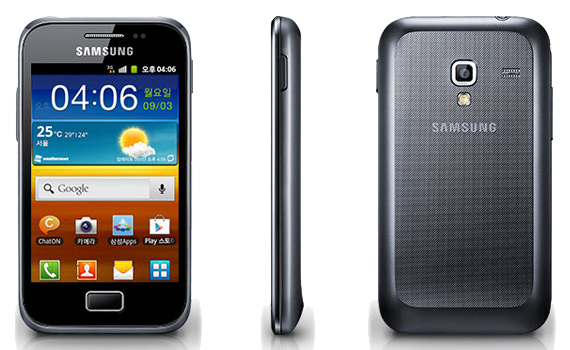

삼성 갤럭시 에이스 플러스
1. 외관

삼성전자가 2012년 1월에 공개한 안드로이드 스마트폰.
2. 사양
| 프로세서 | 퀄컴 스냅드래곤 S1 MSM7227A-1 SoC. ARM Cortex-A5 1 GHz CPU, 퀄컴 Adreno 200 GPU | ||
| 메모리 | 512 MB LPDDR1 SDRAM, 4 GB 내장메모리, micro SDHC (최대 32 GB 까지) | ||
| 디스플레이 |
3.6인치 HVGA(480 x 320) RGB 서브픽셀 방식의 TFT-LCD 멀티터치 지원 정전식 터치 스크린 |
||
| 네트워크 | 기본 | HSDPA & HSUPA & UMTS | GSM & EDGE, Wi-Fi 802.11b/g/n, 블루투스 3.0 |
| CM | TD-SCDMA | ||
| 카메라 | 후면 500만 화소 AF 및 LED 플래시 | ||
| 배터리 | Li-lon 1300 mAh | ||
| 운영체제 | 안드로이드 2.3 (Gingerbread) | ||
| 규격 | 62.5 x 114.7 x 11.2 mm, 115 g | ||
3. 상세
전반적으로는 갤럭시 미니 2와 비슷한 사양을 가졌다. 다만, CPU 클럭이 1 GHz이고, 본가와 비교해 RAM 용량이 늘었다. 그 외에는 별 다른 점은 없다.
한국에서는 2012년 11월에 단말기 자급제 제품으로 출시되었다.